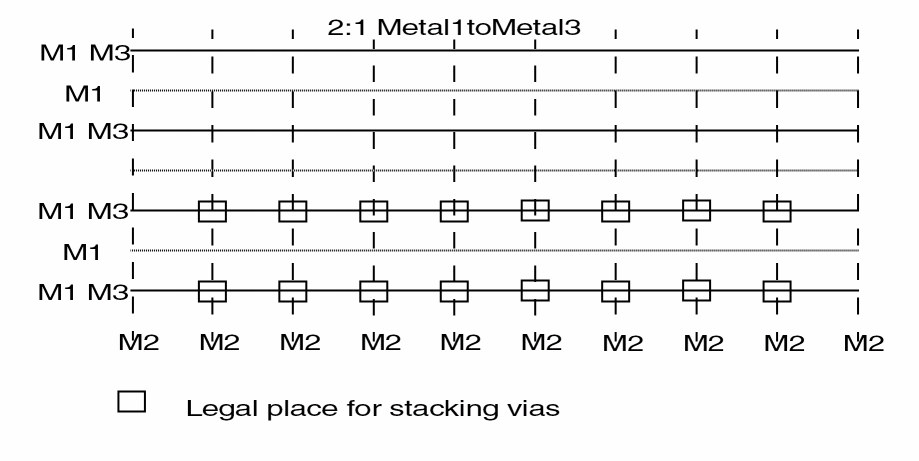

Guidelines for Setting Pitch for Via Stacking
If two metal layers have the same routing direction, make the relationship one of the following: 1:1, 1:2, 2:3, or 3:4.
Vias cannot be stacked where M1 and M3 are not coincident. You can only stack vias at grid intersection points where all layers in the stack exist. If the relationship is not one of the above, it is difficult or impossible to place vias.
If your process allows stacking of vias, you must use one of the above ratios. To stack vias everywhere, use 1:1. This is described in the following figure.

Related Topics
Guidelines for Setting Pitch in a Cell Library
Return to top